，一筐蓝色谷物的重量是
，一筐蓝色谷物的重量是  ，一筐绿色谷物的重量是
，一筐绿色谷物的重量是  ，那么我需要求解以下关于
、
、
的线性方程组：
，那么我需要求解以下关于
、
、
的线性方程组：下面要讲的是一个用文字描述的问题。我发现，如果把三种不同的谷物想成各不相同的颜色，比如红色、蓝色和绿色，那么这个问题就更容易想象。
问题：有三种谷物。如果第一种谷物有 3 筐，第二种谷物有 2 筐，第三种谷物有 1 筐，那么总重量是 39 个单位。如果第一种谷物有 2 筐，第二种谷物有 3 筐，第三种谷物有 1 筐，那么总重量是 34 个单位。如果第一种谷物有 1 筐，第二种谷物有 2 筐，第三种谷物有 3 筐，那么总重量是 26 个单位。请问每种谷物每一筐的重量为多少？1
1 原文为“方程：今有上禾三秉，中禾二秉，下禾一秉，实三十九斗；上禾二秉，中禾三秉，下禾一秉，实三十四斗；上禾一秉，中禾二秉，下禾三秉，实二十六斗。问上、中、下禾实一秉各几何？”——译者注
假设一筐红色谷物的重量是
，一筐蓝色谷物的重量是
，一筐绿色谷物的重量是
，那么我需要求解以下关于
、
、
的线性方程组：
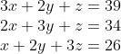
解是
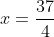
，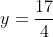
，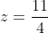
，很容易验证。无论是丢番图还是古巴比伦的数学家，都不难得到这个问题的答案。这个问题之所以在数学史上占据如此重要的地位，是因为提出这个问题的作者发明了解决这个问题以及包含更多未知量的任何类似问题的系统方法，直到现在，刚开始学习矩阵代数的学生们仍在学习这种方法。而这一切竟然发生在 2000 多年前！
我们不知道那位数学家的名字。他可能是《九章算术》的作者或者编者。《九章算术》是一部汇集 246 道关于测量和计算问题的合集，是中国古代数学史上最具影响力的数学著作之一。关于它对中世纪印度、波斯、阿拉伯以及欧洲数学发展的影响程度众说纷纭，但是该书的译本确实从公元后不久就传遍了东亚，考虑到我们对中世纪欧亚大陆贸易和学术交流的了解，如果一些西亚和西方的数学没有从中获得灵感，那才令人震惊。
根据《九章算术》中的一些叙述以及后来版本的编者的一些评注，我们可以推断《九章算术》原文成书于西汉（公元前 202 ～公元 8 年），汉代是中国历史上一个伟大的大一统的朝代。
公元前 211 年，秦始皇统一了中国。然而在他驾崩 11 年后，秦朝的政治体系迅速瓦解。随后开始了楚汉之争（这为中国文学作品、戏剧和戏曲提供了诸多素材），最后，刘邦击败了项羽并称帝，于公元前 202 年建立汉朝。
秦始皇最臭名昭著的行为之一就是焚书坑儒。根据法家商鞅曾主张的严格的中央集权制度，秦始皇下令烧毁儒家典籍。幸好，在古代中国，学习主要依靠记忆 2 ，所以在秦朝统治瓦解之后，仍然记得那些被焚毁的文献的学者们重新整理这些著作。也许就是在这个时候，《九章算术》得以最终成形，它汇集了来自各方记忆的文本。然而，这本著作也可能不是在秦始皇焚书后由学者们重新整理的——他没有下令焚烧那些关于农业和其他实践的著作。因此如果《九章算术》成书早于汉代，那么它很可能没有被烧毁。
2 这也是古代中国的书面语言有如此严格的简洁风格的一个原因。与其说古典文献是叙述，不如说它是记忆。“慎终追远”是孔子告诫我们的话。汉学家理雅各（1814—1897）把这句话翻译为：“Let there be a careful attention to perform the funeral rites to parents, let them be followed when long gone with the ceremonies of sacrifice.”4 个汉语音节对应英文的 39 个单词。
总之，汉朝初期是中国数学的创造时期。和平促使贸易发展，贸易需要计算技术。秦朝开始统一的度量衡标准引起了人们对面积和体积计算的研究兴趣。作为治国圭臬的儒家思想需要精确的历法，这样才能在合适的时间举行各种仪式。一种以通常的 19 年为周期编制的历法 3 应运而生。
3 这个历法是汉朝天文学家落下闳创制的太初历，他生活在大约公元前 156 年到公元前 87 年。
《九章算术》可能就是这段时期的成果之一。该书在公元 1 世纪就已经存在，并且在随后的中国数学文化发展历程中发挥了重要作用，类似于欧几里得的《几何原本》在欧洲的地位。在这本著作的第八章中，就有我刚刚描述的谷物称重问题。
《九章算术》的作者是如何解决这个问题的呢？4 首先，他把第二个方程乘以 3（变成
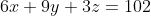
），然后用它减去第一个方程的 2 倍。类似地，把第三个方程乘以 3（变成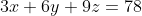
），然后用它减去第一个方程。此时，这三个方程变成：
4
该题是《九章算术》第八章“方程”的第一个问题，解答原文如下。
答曰：上禾一秉，九斗、四分斗之一，中禾一秉，四斗、四分斗之一，下禾一秉，二斗、四分斗之三。
方程术曰，置上禾三秉，中禾二秉，下禾一秉，实三十九斗，于右方。中、左禾列如右方。以右行上禾遍乘中行而以直除。又乘其次，亦以直除。然以中行中禾不尽者遍乘左行而以直除。左方下禾不尽者，上为法，下为实。实即下禾之实。求中禾，以法乘中行下实，而除下禾之实。馀如中禾秉数而一，即中禾之实。求上禾亦以法乘右行下实，而除下禾、中禾之实。馀如上禾秉数而一，即上禾之实。实皆如法，各得一斗。
——译者注
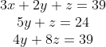
现在，把第三个方程乘以 5（使之变成
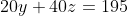
），然后用它减去第二个方程的 4 倍，于是得到：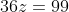
从这个方程可以得到
。把这个结果代入第二个方程，得到
的解，把
和
的值代入第一个方程，得到
的解。
正如我之前所说的，这是一个一般性的方法，它不仅可以用于包含 3 个未知量的 3 个方程，也可以用于包含 4 个未知量的 4 个方程、包含 5 个未知量的 5 个方程，等等。
这个方法就是现在人们所说的高斯消元法。伟大的高斯在 1803 年到 1809 年间对智神星进行了观测，并计算了其轨道。计算中涉及求解包含 6 个未知量的 6 个线性方程。高斯就像上面那样解决了这个问题，而《九章算术》的姓名不详的作者在 2000 年前就做到了。
※※※
一旦掌握了好用的字母符号体系，我们很自然就会有这样的疑问：如果对一个一般的三元线性方程组使用高斯消元法，会得到
、
、
的什么形式的解？一般的三元线性方程组为：
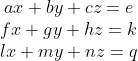
它的解是
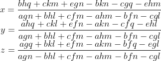
这就是让人们对数学望而生畏乃至放弃的东西。但是，如果你能坚持不懈地研究，就能从中发现一些模式，比如，上面三个解的分母是相同的。
让我们把注意力集中在分母上，它的表达式是
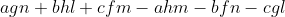
。注意， 、
、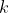
和 根本没有出现在这个表达式中，该表达式完全是由等号左边的系数构成的，即来自以下数阵：
根本没有出现在这个表达式中，该表达式完全是由等号左边的系数构成的，即来自以下数阵：
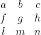
接下来我们注意到，分母的 6 项中的任意一项的 3 个字母都来自这个数阵的不同行与不同列。
例如，观察
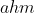
项。 取自第一行、第一列，想象把数阵中的第一行和第一列划掉。下一个数
取自第一行、第一列，想象把数阵中的第一行和第一列划掉。下一个数  不能取自第一行或第一列，必须取自其他行和列。于是，从第二行、第三列取出
之后，第二行和第三列也被划掉。接着是
不能取自第一行或第一列，必须取自其他行和列。于是，从第二行、第三列取出
之后，第二行和第三列也被划掉。接着是  ，除了从第三行、第二列选出
外没有其他选择。
，除了从第三行、第二列选出
外没有其他选择。
不难看出，把上面的步骤运用于 3×3 数阵，可以得到 6 项；把上面的步骤运用于 2×2 数阵，可以得到 2 项；把上面的步骤运用于 4×4 数阵，可以得到 24 项。这些项的个数是之前我在第 7 章中介绍的阶乘：2! = 2, 3! = 6, 4! = 24。对于包含 5 个未知量的 5 个方程，相应的项数是 5! = 120。
各项的符号比较麻烦，一半是正的，另一半是负的，那么是什么决定哪些项前是正号，哪些项前是负号呢？为什么
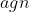
项前是正号，而 项前是负号呢？请你认真观察。首先要注意到，我是按行
的顺序取出这些字母的。比如
项，
在第一行，
在第二行，
在第三行。于是，每一项就可以用字母所在的列
来描述，这不会产生歧义，
所在的列分别是 1、3 和 2。所以，只要我坚持按照行的顺序来写系数（我保证我接下来会这样做），三元组 (1, 3, 2) 就是
的一个别名。
当然，这个三元组也是基本三元组 (1, 2, 3) 的一个置换，如果把基本三元组 (1, 2, 3) 中 2 和 3 的位置对换，就可以得到上面的三元组。
现在，置换分为两种：奇置换和偶置换。上面的置换是奇置换，这就是 前面的符号是负号的原因。另外，项
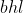
的别名是 (2, 3, 1)（很容易验证），我们可以通过把基本三元组 (1, 2, 3) 中的 1 变成 2、2 变成 3、3 变成 1 得到这一项，这个置换是偶置换，所以 带有正号。太奇妙了，但是如何判断一个置换是奇置换还是偶置换呢？下面我就讲讲如何判断奇置换和偶置换。我将继续使用包含 3 个未知量的 3 个方程的表达式，不过这些方法可以轻松明了地推广到 4 个、5 个或任意多个方程上。
设  和
和  为 1、2 或 3，令
的所有可能数对相减，即
为 1、2 或 3，令
的所有可能数对相减，即
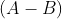
，之后再相乘，得到 (3-2)×(3-1)×(2-1)。这个积是 2（它是 2!×1!，所以我们很容易得到推广后的形式。如果我们处理的是包含 4 个未知量的 4 个方程，那么积是 (4-3)×(4-2)×(4-1)×(3-2)×(3-1)×(2-1)-12，即 3!×2!×1!）。但是，这个数并不是最重要的，重要的是，它的符号是正的。现在，我们对这个式子应用数字 1、2、3 的某些置换。先尝试第一个置换，即 对应的置换，也就是把 2 变成 3、3 变成 2。现在，这个式子变成 (2-3)×(2-1)×(3-1)，计算结果是 -2，所以这是一个奇置换。我们再应用 对应的置换，(3-2)×(3-1)×(2-1) 变成 (1-3)×(1-2)×(3-2)，结果是 + 2，这是一个偶置换。
奇偶置换非常重要，这显然与第 7 章中讨论的问题有关。下面是 (1, 2, 3) 的所有 6 种可能的置换，用我刚才使用的方法可以计算出它们的奇偶性。
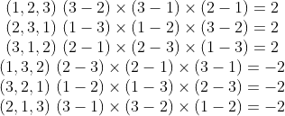
可见，其中一半是奇置换，另一半是偶置换。总是如此。所以，分母表达式中每一项的符号是由系数对应的置换的符号决定的。就是这样！
刚才讨论的分母表达式是行列式
的一个例子。事实上，
、
和
的分子也是行列式。你可以尝试找出每个分子是哪一个 3×3 数阵的行列式。对行列式的研究最终推动了矩阵
的发现，这是近世代数中非常重要的主题。一个矩阵就是一个数阵，就像我在上面给出的 3×3 数阵，不过，矩阵本身就是一个研究对象
。我稍后再讲这个问题。
奇怪的是，现代的代数课程却首先介绍矩阵，然后才介绍行列式，这与它们出现的历史顺序恰恰相反：人们在矩阵出现之前就知道行列式了。
出现这种情况的根本原因在于，行列式是一个数 （对此我还会进一步说明），而矩阵不是数，它是一类不同的事物，是一个不同的数学对象。在本书中，我们目前谈论的是 19 世纪初期和中期（尽管我没有在本章讲述这段时期，本章还有一段历史需要补充），当时的代数对象正从数和位置这样的传统数学中分离出来，开始独立发展。
※※※
虽然在几个世纪中，数学家们随意地处理线性方程组，但他们一定在无意中多次发现了类似行列式的表达式，而且我提到过的一些代数学家（特别是卡尔达诺和笛卡儿）的发现已经非常接近真正的行列式。但是，真正清楚的行列式直到 1683 年才毫无争议地出现。这是数学史上最著名的巧合之一，那一年行列式被发现了两次 。一次是在汉诺威王国，即今天的德国的一部分；另一次是在江户，也就是今天的日本东京。
这位德国数学家是我们熟悉的一位数学家，他就是戈特弗里德·威廉·莱布尼茨（1646—1716），微积分的共同发明者之一（与牛顿同时发明了微积分），他还是哲学家、逻辑学家、宇宙学家、工程师以及法律和宗教改革者，他非常博学，就像一位给他写传记的作家所说的那样 5 ：莱布尼茨是一位“整个学术研究世界的公民”。莱布尼茨年轻时曾四处游历，之后，他 70 年人生中的后 40 年都在为汉诺威公爵效力。汉诺威是当时占据今天德国版图的小国中最大的一个王国。
5 乔治·麦克唐纳·罗斯著的《莱布尼茨》（牛津大学出版社，1984 年）。
莱布尼茨在 1683 年写给法国数学贵族洛必达（1661—1704）的一封信中说，如果由包含两个未知数的三个方程组成的线性方程组
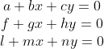
有解
和
，那么
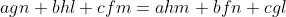
这相当于说行列式 一定等于 0。莱布尼茨是完全正确的。尽管他没有建立行列式的完整理论，但是他的确清楚地知道它们在求解线性方程组中的重要性，而且他还掌握了控制行列式的结构和行为的一些对称原则，就像我在前面叙述过的那些原则。
与莱布尼茨几乎同时独立发现行列式的人是日本的关孝和，我们不太清楚他的准确的生卒日期，他大约在 1642 年出生于江户或藤冈。小堀宪在《科学传记大辞典》中关孝和的词条中说：“人们对关孝和生平的了解极少且是间接的。”他的生父是一名武士，但是因为关家收养了他，所以关孝和随了这个家族的姓。
当时，在强大统治者的统治下，日本已经进入了民族统一、文化自信的时代——江户时代。江户时代的第一个幕府，也是最伟大的幕府，正是詹姆斯·克拉韦尔的精彩小说《幕府将军》的主题。和平统一推动了货币经济发展，因此日本对会计和审计员的需求量大增。关家的族长就从事相关工作，关孝和也走上了这条路，最终被提拔为御纳户组头（指全国供应部门的负责人），还晋升为武士。据《科学传记大辞典》记载：“1706 年，由于年龄太大，无法胜任其职务，他被调任闲职，并于两年后去世。”
由日本人写的第一本数学著作出版于 1622 年，即毛利重能的《割算书》。我们的主人公关孝和是毛利重能的徒孙，也就是说，关孝和的老师（这个人叫高原吉种，我们对他几乎一无所知）是毛利重能的学生。关孝和也深受中国数学文献的影响，他肯定知道《九章算术》。
尽管当时的东亚也发明了表示系数、未知量和未知量的幂的“文字”（这些“字母”实际上就是汉字）符号体系，但是关孝和知道的远远不止这些。虽然他得到的方程的解是数值解，而不是严格的代数解，但是他的研究很深刻，他差一点儿就发明了微积分。如今我们所说的由雅各布·伯努利（1654—1705）于 1713 年引入欧洲数学的伯努利数，实际上关孝和在此 30 年前就已经发现了 6 。
6 当你试图得到诸如
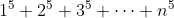
这样的整数幂求和公式时，就会出现伯努利数。但是准确地解释伯努利数的出现需要很长的篇幅，你可以参看康威和盖伊合著的《数之书》。从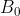
起的前几个伯努利数是 1、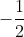
、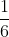
、0、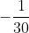
、0、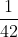
、0、 （是的，它重复出现了）、0、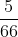
、0、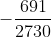
、0、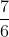
、0、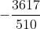
、0、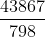
等。注意，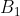
后面所有的奇数项伯努利数都是 0。我在第 12 章还会介绍伯努利数。作为一名武士，关孝和必须保持谦逊，因此他不能以自己的名义出版著作。互相竞争的数学教育学派之间还有互相保密的文化，就像我之前描述的 16 世纪的意大利一样。我们通过关孝和的学生出版的两本书了解到了关孝和的工作，一本书出版于 1674 年，另一本书出版于关孝和去世后的 1709 年。正是在第二本书中出现了关孝和关于行列式的研究。他提炼并推广了之前讲述的中国的行消元法，并展示了行列式在其中所起的作用。
※※※
遗憾的是，无论是关孝和的成果，还是莱布尼茨的成果都没有产生立竿见影的效果。近代以前，在日本也似乎没有进一步的发展。在欧洲，当行列式再次出现时，已经经过了整整一代人。然后，行列式突然开始流行，在 18 世纪晚期已经成为西方数学的主流。
上文大致描述的利用行列式求解线性方程组的过程被称为克莱姆法则，它最早出现在 1750 年出版的一本名为《代数曲线分析导论》的书中。那本书的作者是加百列·克莱姆（1704—1752），他是一位瑞士数学家和工程师，他四处游历，熟悉当时所有伟大的欧洲数学家。在该书中，克莱姆解决了求解经过平面上任意  个点的最简代数曲线（即左边是关于
、
的多项式、右边是 0 的方程定义的曲线）的问题。他发现，任给平面上的 5 个点，我们都可以找到一条经过它们的二次曲线，即满足如下方程的曲线：
个点的最简代数曲线（即左边是关于
、
的多项式、右边是 0 的方程定义的曲线）的问题。他发现，任给平面上的 5 个点，我们都可以找到一条经过它们的二次曲线，即满足如下方程的曲线：

我将在后面的代数几何基础知识中详细介绍这类曲线。求解经过给定 5 个点的曲线的方程需要求解一个包含 5 个未知量的线性方程组。这不仅仅是一个抽象的问题。根据开普勒定律，行星的运行轨道（近似）是一条二次曲线，因此，观测行星的 5 个位置就足以相当精确地确定它的轨道。7
7 更多的观察会带来更精确的结果。另外，行星间彼此的引力也影响了行星的理想的二次曲线轨迹，这就是高斯对智神星进行了 6 次观察的原因。高斯知道克莱姆法则吗？他一定知道，但是对这些特殊的计算来说，消元法是完全胜任的。
※※※
我们可以在行列式之间进行运算吗？例如，给定两个正方形数阵，如果按照如下方式把它们对应的元素加起来，得到一个新方阵：
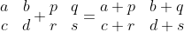
那么这个新方阵的行列式是前两个方阵的行列式之和吗？不是，左边两个方阵的行列式加起来是
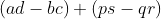
，而右边方阵的行列式是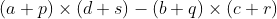
，它们并不相等。尽管将行列式相加不会让我们得到什么有用的东西，但相乘 可以。把上面的方阵中左边的两个行列式相乘：
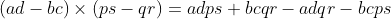
。这是某个有趣方阵的行列式吗？确实是的，这个乘积就是下面这个 2×2 方阵的行列式：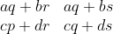
仔细观察这个方阵，你会发现它的 4 个元素中的每一个元素都是第一个方阵的某一行
（
、 或者
或者  、
、 ）和第二个方阵的某一列
（
）和第二个方阵的某一列
（ 、
、 或者
、
或者
、
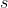
）通过简单的算术得到的。例如，第二行、第一列的元素来自第一个方阵的第二行和第二个方阵的第一列。这不仅仅适用于 2×2 方阵：如果你把两个 3×3 方阵的行列式相乘，可以得到一个表达式，它是另一个 3×3 方阵的行列式，这个“乘积方阵”的第
行、第
列的数是通过合并第一个方阵的第
行与第二个方阵的第
列得到的，和上面描述的过程类似。8
8
当我还是本科生的时候，老师教我把这个过程（将两个矩阵相乘）看成“把行潜入列”。为了计算乘积矩阵中第
行、第
列的元素，需要取第一个矩阵的第
行，把它顺时针旋转 90°，再把它放到第二个矩阵的第
列的旁边，将对应的数乘起来，然后再把它们加起来，我们就得到了想要的元素。例如，下面是一个矩阵乘法的例子，用矩阵记法写成：
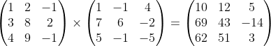
对一位 19 世纪初的数学家来说，观察这个 2×2 乘积方阵会让他想起另外一件事：高斯 1801 年出版的经典著作《算术研究》中的第 159 节。在那里，高斯提出了以下问题：假设对关于
和
的某个表达式做这样的替换，令
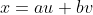
，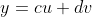
，换句话说，通过一个线性变换 ，把未知量
和
变成 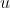
和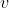
，
与
均是
和
的线性表达式。假设再做一次替换，通过两个线性变换 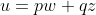
和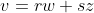
，将未知量 和 转化成另外一对关于未知量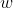
和
的表达式。
合成的结果是什么呢？从未知量
和
到未知量
和
，中间经过了未知量
和
，过程中一直使用的是线性变换，那么最终的替换是什么呢？这很容易弄明白。合成结果就是这样的替换：
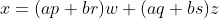
，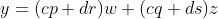
。请你观察括号里的表达式，看起来行列式相乘与线性变换有某种联系。随着这些想法和结果的传播，建立清晰明了的行列式理论只是时间问题。这项工作是由柯西完成的，1812 年，他在向法国科学院宣读的一篇很长的论文中发表了这个成果。柯西则对行列式及其对称性和运算法给出了全面、系统的描述。他还描述了我在这里给出的乘法法则，当然他的法则比我给出的更一般化。柯西这篇发表于 1812 年的论文通常被看作现代矩阵代数的开端。
※※※
从对行列式的操作演变成真正的抽象矩阵代数花费了整整 46 年的时间。尽管行列式的运算法则及其对称性都非常迷人，但是它还是牢牢地依附于数的世界。行列式是一个数，尽管为了计算它，我们需要仔细观察一个复杂的代数表达式。现代意义中的矩阵不是一个数，而是一个数阵 ，就像我们之前讨论过的那样。它在某一行、某一列的元素可能是数（也不一定必须如此），而且还有一个与它相关的重要的数，这个数就是它的行列式。然而，矩阵本身就是数学家们感兴趣的对象。总之，它是一个新的数学研究对象。
我们可以把两个方阵 9 相加或相减得到另一个方阵：只需把对应的项加起来（或相减）即可。（矩阵是可以这样相加的，但是两个矩阵的行列式之和不等于矩阵之和的行列式。）我们可以让一个数与一个矩阵相乘得到另一个矩阵。这看起来熟悉吗？所有
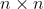
矩阵构成了一个 维向量空间。另外，我们可以利用上面对行列式使用的技巧把两个矩阵乘起来，因此所有的 矩阵不仅构成了一个向量空间，而且还构成了一个代数。
9
矩阵不一定都是正方形的。考虑一下矩阵的乘法法则——第一个矩阵的某一行与第二个矩阵的某一列结合，因此只要第一个矩阵的列数等于第二个矩阵的行数，矩阵的乘法就可以进行。事实上，一个
行
列矩阵可以和一个
行
列矩阵相乘，它们的积是
行
列矩阵。一个常见的情况是
。任何一本正规的本科现代代数教材都会澄清这个问题。我仍然推荐迈克尔·阿廷的《代数》，绍姆的纲要系列丛书（Schaum's Outlines
）中弗兰克·艾尔斯（1901—1994）所著的《矩阵》也非常好。
我们可以说明它是所有代数中最重要的。例如，它包含很多其他代数。举一个简单的例子，复数代数及其加法、减法、乘法和除法法则可以完全对应到所有 2×2 矩阵的某个子集上。你可以验证，当复数 和 对应于下面两个矩阵时，矩阵的乘法法则（与上面给出的行列式乘法法则相同）确实再现了复数的乘法法则：
你也许想知道，在这种对应下表示 i 的矩阵是什么。把这个矩阵与它自身相乘，我们可以验证，得到的矩阵确实表示 -1。
哈密顿的四元数也可以类似地对应到一个 4×4 矩阵组成的集合。我们不必担心四元数的乘法是非交换的，因为矩阵乘法也是非交换的。（尽管有一些特殊的矩阵族，如代表复数的矩阵，它们的乘法是交换的。）非交换性突然出现在整个 19 世纪中期的代数学中。置换也是非交换的，它也可以用矩阵来表示，这些数学知识会把我们带得更远。
总之，矩阵是一个很了不起的东西。它非常有用，任何一门现代代数课程都是从详细介绍矩阵开始的。
※※※
我在上面已经讲过，从行列式演变到矩阵花费了 46 年，直到 1812 年柯西在法国科学院宣读了关于行列式的权威论文。第一个在代数学文献中使用“matrix”（矩阵）一词的人是英国数学家西尔维斯特（1814—1897），他在发表于 1850 年的一篇学术论文中使用了这个术语。西尔维斯特将矩阵定义为“排成矩形的数阵”。然而，他的想法仍然基于行列式。在另一篇论文中，“矩阵本身就是一个数学对象”第一次被承认，这篇论文是英国数学家阿瑟·凯莱于 1858 年发表在《伦敦哲学学会学报》上的，标题为《矩阵论研究报告》。
在数学史上，人们总是把凯莱和西尔维斯特二人相提并论，我觉得我没有什么理由不遵从这个传统。他们几乎是同代人，西尔维斯特（出生于 1814 年）比凯莱年长 7 岁。他们在 1850 年相识，二人当时都在英国伦敦从事法律工作，后来成为挚友。他们都在研究矩阵，也都在研究不变量（更晚些），而且他们都在剑桥大学学习，只是所在的学院不同。
凯莱当选为他所在的学院——剑桥三一学院的研究成员，并在那里任教四年。由于接下来他不得不在英格兰圣公会担任圣职，而这显然不是他愿意做的事，因此他转去从事法律工作，并于 1849 年获得律师资格。
西尔维斯特的第一份工作是在新成立的伦敦大学担任自然哲学教授。德·摩根（1806—1871，我将在第 10 章介绍他）是他的同事。但西尔维斯特在 1841 年就离开了这里，去美国弗吉尼亚大学担任教授。他仅在那里待了三个月，由于与某个学生发生冲突而辞职。这件事有多个版本，我不清楚哪个是真的。很显然，这个学生侮辱了西尔维斯特，但是接下来发生的事情就众说纷纭了。有人说西尔维斯特用剑杖刺了这名学生，而且拒绝道歉；也有人说西尔维斯特要求学校惩罚这名学生，但是学校没有这样做；甚至还有人说这是恋人之间的纠纷。西尔维斯特终生未婚，他写华丽的诗歌，喜欢高声歌唱，在数学界善于逢迎的日记作家托马斯·赫斯特（1830—1892）评论道：
星期一收到西尔维斯特的信后，我去雅典娜俱乐部看他……他热情得过了头，而且希望我们能够住到一起，请我跟他到伍利奇生活，等等。总之，他对人的情感比较古怪。
无论真相如何，我觉得我们没有必要去揣测西尔维斯特的内心世界来说明他的个性、他的犹太血统（他出生时姓“约瑟夫”，“西尔维斯特”是后来加上的姓）和他反对奴隶制的观点，这都无助于他被南北战争前夏洛茨维尔的年轻人接纳。他回到英格兰，找了一份保险精算师工作，考取了律师资格证，还通过招收私人学生来增加收入。〔其中一位学生是弗洛伦斯·南丁格尔（1820—1910）——“提灯天使”，她也是一位很有能力的数学家和统计学家。〕
凯莱和西尔维斯特只是 19 世纪初不列颠群岛出现的一批优秀代数学家中的两位。当然，哈密顿也是其中的一员。事实上，我有必要为萨克雷笔下的某个人物所说的“多雾群岛”单独开设一章，以便读者能更好地了解 19 世纪初期和中期代数思想发生重大转变的一些背景。